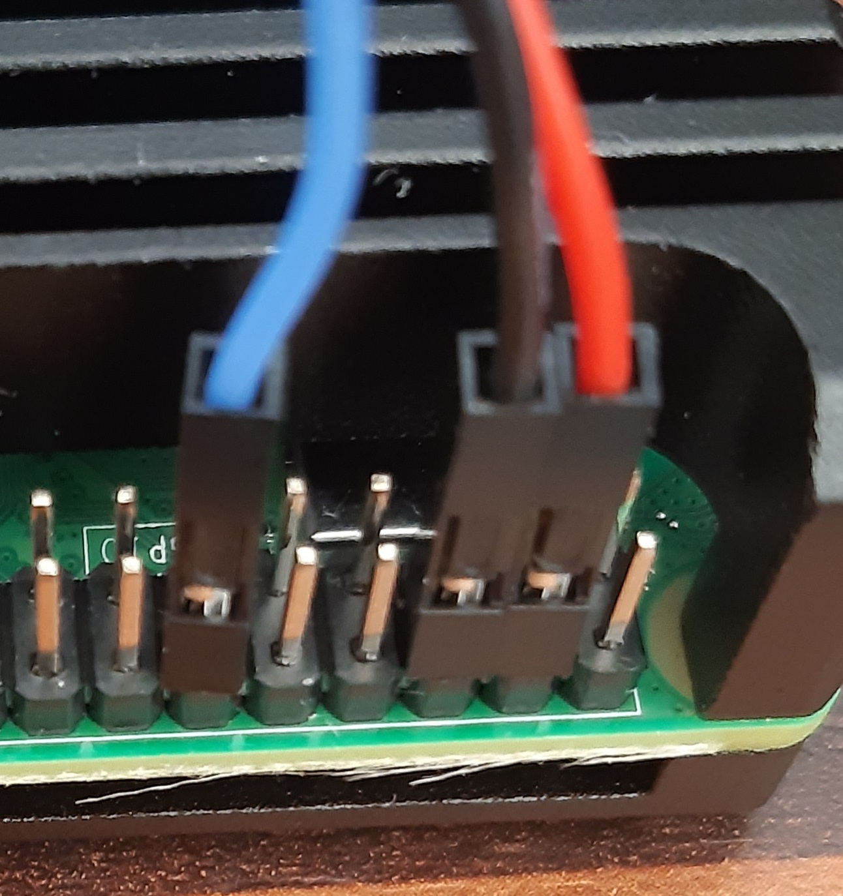

This is the second post in the series PWM Controlled FAN for Raspberry PI in Klipper. In the first post I wrote about general interformation about PWM.
Now we will connect the FAN to the Raspberry PI and see if it's working.
Connect the FAN to the Raspberry PI
I'm using a 5V FAN, that can be directly connected to pin header of the Raspberry Pi.
Like stated in the first post, it has a dedicated PWM Pin.
| Color | Signal | Raspberry PI Usage |
|---|---|---|
| Red | 5V | 5V from Power Supply |
| Black | GND | GND |
| Blue | FAN-PWM | GPIO18 |
Because I rebooted my Raspberry PI in between, I need to setup the PWM signal generation like described in the first post
And because there is no PWM ouput enabled, the PIN is connected to GND and the FAN will run on slowest speed.
The FAN I use here stopped completly. But I also dealt with FANs that doesn't stop, when the PWM pin is pulled to GND - they were jsut running very slow.
How your FAN behaves is depended on the (into the FAN) integrated controller.
Controlling the FAN from command line
All the commands need to be issued as root. So I recommand to get root permissions by
sudo su
Preparation
cd /sys/class/pwm/pwmchip0
echo 0 > export
cd pwm0
Let fan run on full speed
echo 40000 > period
echo 40000 > duty_cycle
echo 1 > enable
After issuing this commands the FAN should run on maximum speed.
Switch FAN to lowest speed
echo 0 > duty_cycle
If your FAN stop completly like my FAN then, we need to find out whats the minimum duty_cycle is to get the FAN running.
You can simply do this by setting increasing values to the duty_cycle
My fan here starts spinning at duty_cycle of arround arround 6000. On lower values it doesn't start at all, or just begins to spin, and stop then.
But this heavily depends on how your FAN utilizes the PWM signal.
Now we have ensured the our wiring is ok, and we can control the fan. Lets head to Klipper.
Integrate the FAN in Klipper
Auto Setup PWM Controller
We need to make sure that the
echo 0 > /sys/class/pwm/pwmchip0/export
Is called on boot.
The Klipper documentation recommends to add the line above to the /etc/rc.local file.
Raspberry PI MCU
To use the Raspberry PI in Klipper you have to enable the Raspberry PI as an additional MCU in klipper.
Please follow steps described here
You should at least
To add the Raspberry PI MCU you need to add the following snippet to your printer.cfg
[mcu rpi]
serial: /tmp/klipper_host_mcu
When your klipper comes up, and is ready for printing you can continue with the integration of the FAN.
Fan as [output_pin]
If you want to add your FAN so that it is just manually controlable you can add the FAN as an [output_pin]
Add the following snippet to your printer.cfg
[output_pin rpi_fan]
pin: rpi:pwmchip0/pwm0
pwm: True
hardware_pwm: True
cycle_time: 0.000040
After a restart you can control the FAN using the [output_pin]
Please refer to the Klipper Configuration Reference for more details of the used parameters.
- From the WebUI
- per GCODE Command
SET_PIN PIN=rpi_fan VALUE=0.42
The VALUE is in the range from 0.0 to 1.0
0.0 for minimum speed
1.0 for maximum speed
Fan as [temperature_fan]
Klipper provides everything you need to control your fan RPM based on the temperature of a sensor. By using a socalled [temperature_fan]
You can add following snippet to your printer.cfg file
[temperature_fan rpi_pwm_fan]
sensor_type: temperature_host
pin: rpi:pwmchip0/pwm0
hardware_pwm: True
cycle_time: 0.000040
min_temp: 0.0
max_temp: 100
control: pid
pid_Kp: 1
pid_Ki: 1
pid_Kd: 1
min_speed: 0.0
After restart, klipper now starts to control the FAN based on the set temperaure setpoint.
I just want to give a small overview of the meaning of a few of the used parameters, for the other parameters please refer to the Klipper Configuration Reference - [temperature_fan]
- sensor_type defines the temperature sensor that is used to control the fan
- we use the temperature_host that contains the CPU temperature of the Raspberry PI
- pin
- defines the PIN which is used to control the FAN
- we use:
- on the MCU called rpi
- the pwmchip0
- and the channel 0 pwm0
- cycle_time
- we use a cycle (period) of 0.00004 seconds (=25kHz)
- control
- the fan is controlled by a PID Controller
- pid_K(p)(i)(d)
- are the parameter for the PID controller
- P is the propotional influence
- I is the integreal influence
- D is the derivat influence
- min_speed
- by default the min_speed is set to 0.3 which doesn't allow the FAN to be stopped completly.
- I want to able to stop the FAN completly so it set it 0.0
Caveats
Letting Klipper control the FAN of the Raspberry PI leads to the following problem.
Klipper just controls the FAN speed when everything when Klipper is running properly, but if you power of your printer because you were not using it. Klipper will go into the error state because it could not reach the MCU on your printer.
Klipper stops controlling the FAN, and the FAN keeps running in the state as it was, when you powered of the 3D Printer.